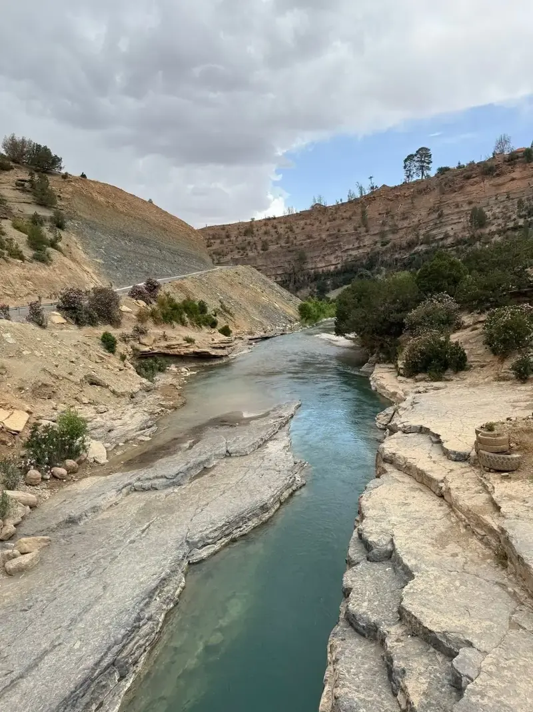

Oued Ahansal – Artère de l’Atlas
5 février 2026
L’Oued Ahansal prend sa source vers Taghia et Zaouiat Ahansal avant de poursuivre vers Tilouguite et Bin El Ouidane.
Son eau alimente l’agriculture, les villages et un écosystème riche. Au printemps, son débit offre d’excellentes conditions pour le rafting.